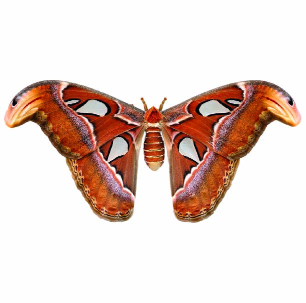
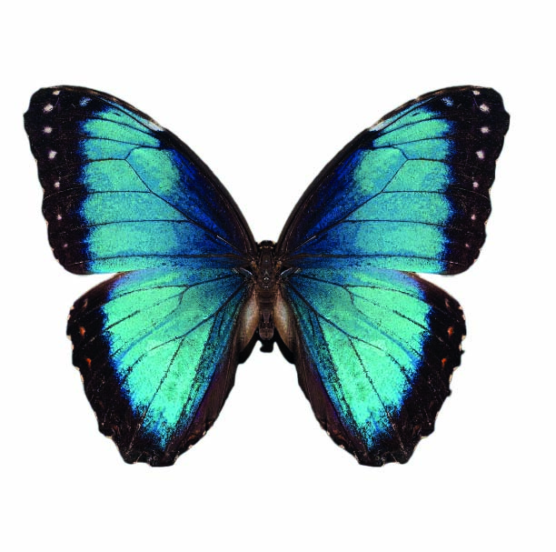

La Attacus atlas, una de las polillas más grandes del mundo, asombra por el diseño de sus alas: sus extremos simulan cabezas de serpiente para engañar a los depredadores. Vive apenas unos días, sin alimentarse, concentrando toda su energía en reproducirse. Su vuelo breve y su tamaño imponente la convierten en un espectáculo tan majestuoso como efímero.
Ambas especies revelan cómo la naturaleza invierte en breves momentos de esplendor. No necesitan durar para impactar. Con recursos visuales sofisticados, estas mariposas transforman su fragilidad en estrategia y su apariencia en defensa. Son obras vivas de diseño evolutivo, tan fugaces como inolvidables.

La Morpho menelaus revolotea en las selvas sudamericanas como un fragmento de cielo. Su azul vibrante, producto del color estructural, brilla solo bajo ciertos ángulos de luz, haciendo que desaparezca y reaparezca mientras vuela. Este destello intermitente no solo maravilla: también confunde a quienes intentan atraparla.